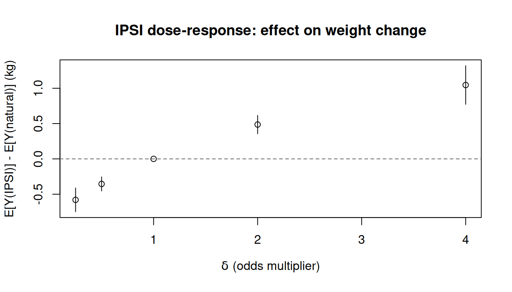
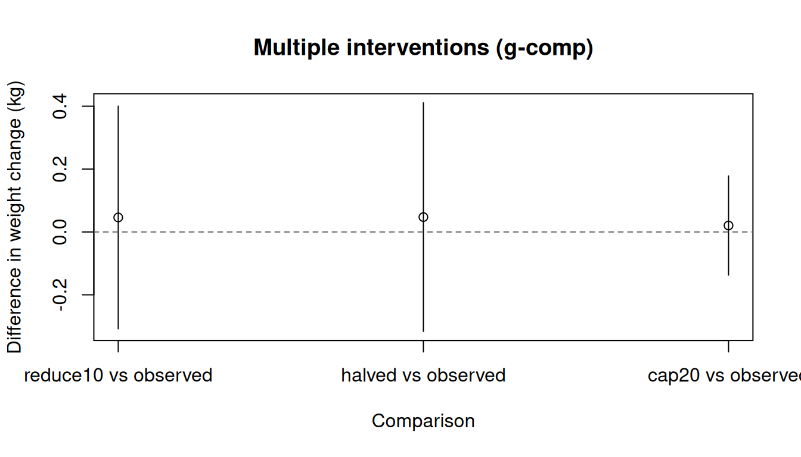

causatr 中的干预类型
Intervention types in causatr · causatr 官方文档中译
来源：R 包 causatr 官方文档
interventions.qmd，MIT 许可。 本页是中译，代码与运行结果直接取自原站的渲染输出，未在本站重新执行。 Copyright (c) 2026 causatr authors；许可证全文见原仓库LICENSE.md。
causatr 把模型拟合（causat()）与因果对比（contrast()）分开。干预 — 也就是处理上 那个假设性的改变 — 是在做对比时指定的，而不是在拟合时指定的。这个设计让你只拟合一次， 就能在许多不同的干预下做对比，而不必重新估计冗余模型。
本文逐一介绍每个干预构造函数，说明哪些估计量支持它，并在真实数据和模拟数据上演示调用方式。
干预构造函数一览
| Constructor | What it does | G-comp | IPW | AIPW | Matching |
|---|---|---|---|---|---|
static(v) |
把所有人的处理设为 v |
所有类型 | 二值、分类 | 所有类型 | 二值 |
shift(d) |
在观测到的处理上加 d |
连续 | 连续、计数（d 为整数） |
连续 | — |
scale_by(c) |
把观测到的处理乘以 c |
连续 | 连续、计数（保持整数） | 连续 | — |
threshold(lo, hi) |
把处理限制在 [lo, hi] 内 |
连续 | — | — | — |
dynamic(rule) |
应用用户自定义的确定性规则 | 所有类型 | 二值、分类 | 所有类型 | — |
ipsi(d) |
把处理的优势（odds）乘以 d |
— | 二值 | — | — |
stochastic(f) |
从用户提供的分布中抽取处理 | 所有类型 | — | — | — |
grace_period(w) |
把处理的起始推迟 w 个周期（自然史 MTP） |
纵向、离散 | — | — | — |
carry_forward() |
把基线处理向后结转（LOCF；自然史 MTP） | 纵向、离散 | — | — | — |
cap_escalation(d) |
把每个周期的自然剂量增幅上限设为 d（自然史 MTP） |
纵向、有序/计数 | — | — | — |
NULL |
自然进程（观测值） | 所有类型 | 所有类型 | 所有类型 | — |
grace_period()、carry_forward() 和 cap_escalation() 属于自然史修正处理策略 （G-LMTPs）：时刻 \(t\) 上被干预的处理取决于处理的反事实自然值历史，因此它们无法写成 dynamic() 规则（后者只能看到观测到的滞后值）。它们由增广数据的序贯回归来估计， 需要一个处理为离散变量的纵向 G-computation 拟合。 cap_escalation() 针对有序/计数型剂量，当剂量以灵活的形式进入每一步的模型 （treatment_form = ~ factor(dose)）时它是相合的 — 可运行的示例见纵向数据文档和 自然史 MTPs 文章。
数据：NHEFS
所有示例都使用 NHEFS 数据集 (Hernán 和 Robins 2025)：
- 二值处理（\(A\)）：
qsmk— 是否戒烟（0/1）。用于static()、dynamic()和ipsi()的示例。 - 连续处理（\(A\)）：
smokeintensity— 每天吸烟的支数。用于shift()、scale_by()和threshold()的示例。 - 结局（\(Y\)）：
wt82_71— 体重变化，单位 kg。 - 混杂因子（\(L\)）： 性别、年龄、种族、受教育程度、吸烟相关变量、锻炼、 活动水平和基线体重 — 它们是 \(A\) 与 \(Y\) 的共同原因。
library(causatr)
library(tinyplot)
data("nhefs")
nhefs_complete <- nhefs[!is.na(nhefs$wt82_71) & !is.na(nhefs$education), ]static() — 把处理设为固定值
最简单也最常用的干预。static(1) 表示“所有人都接受处理”；static(0) 表示 “没有人接受处理”。对于分类处理，把水平名作为字符串传入（例如 static("B")）。
G-computation
fit_gc <- causat(
nhefs_complete,
outcome = "wt82_71",
treatment = "qsmk",
confounders = ~ sex + age + I(age^2) + race + factor(education) +
smokeintensity + I(smokeintensity^2) + smokeyrs + I(smokeyrs^2) +
factor(exercise) + factor(active) + wt71 + I(wt71^2),
model_fn = stats::glm
)
contrast(
fit_gc,
interventions = list(quit = static(1), continue = static(0)),
reference = "continue",
type = "difference"
)| intervention | estimate | se | ci_lower | ci_upper |
|---|---|---|---|---|
| quit | 5.21 | 0.421 | 4.384 | 6.035 |
| continue | 1.747 | 0.217 | 1.321 | 2.173 |
| comparison | estimate | se | ci_lower | ci_upper |
|---|---|---|---|---|
| quit vs continue | 3.462 | 0.468 | 2.546 | 4.379 |
IPW
fit_ipw <- causat(
nhefs_complete,
outcome = "wt82_71",
treatment = "qsmk",
confounders = ~ sex + age + I(age^2) + race + factor(education) +
smokeintensity + I(smokeintensity^2) + smokeyrs + I(smokeyrs^2) +
factor(exercise) + factor(active) + wt71 + I(wt71^2),
estimator = "ipw",
model_fn = stats::glm,
propensity_model_fn = stats::glm
)
contrast(
fit_ipw,
interventions = list(quit = static(1), continue = static(0)),
reference = "continue",
type = "difference"
)| intervention | estimate | se | ci_lower | ci_upper |
|---|---|---|---|---|
| quit | 5.288 | 0.447 | 4.412 | 6.163 |
| continue | 1.788 | 0.217 | 1.363 | 2.214 |
| comparison | estimate | se | ci_lower | ci_upper |
|---|---|---|---|---|
| quit vs continue | 3.499 | 0.49 | 2.538 | 4.46 |
AIPW（双稳健）
fit_aipw <- causat(
nhefs_complete,
outcome = "wt82_71",
treatment = "qsmk",
confounders = ~ sex + age + I(age^2) + race + factor(education) +
smokeintensity + I(smokeintensity^2) + smokeyrs + I(smokeyrs^2) +
factor(exercise) + factor(active) + wt71 + I(wt71^2),
estimator = "aipw",
model_fn = stats::glm,
propensity_model_fn = stats::glm
)
contrast(
fit_aipw,
interventions = list(quit = static(1), continue = static(0)),
reference = "continue",
type = "difference"
)| intervention | estimate | se | ci_lower | ci_upper |
|---|---|---|---|---|
| quit | 5.254 | 0.44 | 4.391 | 6.116 |
| continue | 1.777 | 0.218 | 1.349 | 2.205 |
| comparison | estimate | se | ci_lower | ci_upper |
|---|---|---|---|---|
| quit vs continue | 3.477 | 0.483 | 2.531 | 4.423 |
匹配
fit_match <- causat(
nhefs_complete,
outcome = "wt82_71",
treatment = "qsmk",
confounders = ~ sex + age + I(age^2) + race + factor(education) +
smokeintensity + I(smokeintensity^2) + smokeyrs + I(smokeyrs^2) +
factor(exercise) + factor(active) + wt71 + I(wt71^2),
estimator = "matching",
estimand = "ATT"
)
contrast(
fit_match,
interventions = list(quit = static(1), continue = static(0)),
reference = "continue",
type = "difference"
)| intervention | estimate | se | ci_lower | ci_upper |
|---|---|---|---|---|
| quit | 4.525 | 0.435 | 3.672 | 5.378 |
| continue | 1.184 | 0.383 | 0.433 | 1.935 |
| comparison | estimate | se | ci_lower | ci_upper |
|---|---|---|---|---|
| quit vs continue | 3.341 | 0.559 | 2.246 | 4.436 |
四种方法给出的估计值应当大体接近（三角验证）。若出现明显差异， 说明其中一种或多种方法存在模型误设。
shift() — 在观测到的处理上加一个常数
一种修正处理策略（MTP），把每个个体观测到的处理平移一个固定量。 对连续处理，它回答的问题是：“如果每个人的暴露都增加（或减少）delta 个单位，会发生什么？”
G-computation
fit_gc_cont <- causat(
nhefs_complete,
outcome = "wt82_71",
treatment = "smokeintensity",
confounders = ~ sex + age + I(age^2) + race + factor(education) +
smokeyrs + I(smokeyrs^2) + factor(exercise) + factor(active) +
wt71 + I(wt71^2),
model_fn = stats::glm
)
res_shift_gc <- contrast(
fit_gc_cont,
interventions = list(reduce10 = shift(-10), observed = NULL),
reference = "observed",
type = "difference"
)
res_shift_gc| intervention | estimate | se | ci_lower | ci_upper |
|---|---|---|---|---|
| reduce10 | 2.684 | 0.256 | 2.183 | 3.186 |
| observed | 2.638 | 0.199 | 2.248 | 3.028 |
| comparison | estimate | se | ci_lower | ci_upper |
|---|---|---|---|---|
| reduce10 vs observed | 0.046 | 0.181 | -0.308 | 0.4 |
IPW
在 IPW 下，shift(delta) 使用密度比权重：处理密度在逆平移值处的取值与在观测 值处的取值之比。前推方向的符号很重要 — shift(delta) 是在 A - delta 处 求值，而不是 A + delta — 因为权重用的是逆映射。
fit_ipw_cont <- causat(
nhefs_complete,
outcome = "wt82_71",
treatment = "smokeintensity",
confounders = ~ sex + age + I(age^2) + race + factor(education) +
smokeyrs + I(smokeyrs^2) + factor(exercise) + factor(active) +
wt71 + I(wt71^2),
estimator = "ipw",
model_fn = stats::glm,
propensity_model_fn = stats::glm
)
res_shift_ipw <- contrast(
fit_ipw_cont,
interventions = list(reduce10 = shift(-10), observed = NULL),
reference = "observed",
type = "difference"
)
res_shift_ipw| intervention | estimate | se | ci_lower | ci_upper |
|---|---|---|---|---|
| reduce10 | 2.69 | 0.248 | 2.205 | 3.175 |
| observed | 2.638 | 0.199 | 2.248 | 3.028 |
| comparison | estimate | se | ci_lower | ci_upper |
|---|---|---|---|---|
| reduce10 vs observed | 0.051 | 0.163 | -0.268 | 0.371 |
不同方法下的 shift 结果比较
est <- data.frame(
method = c("G-comp", "IPW"),
estimate = c(
res_shift_gc$contrasts$estimate[1],
res_shift_ipw$contrasts$estimate[1]
),
ci_lower = c(
res_shift_gc$contrasts$ci_lower[1],
res_shift_ipw$contrasts$ci_lower[1]
),
ci_upper = c(
res_shift_gc$contrasts$ci_upper[1],
res_shift_ipw$contrasts$ci_upper[1]
)
)
tinyplot(
estimate ~ method,
data = est,
type = "pointrange",
ymin = est$ci_lower,
ymax = est$ci_upper,
xlab = "Method",
ylab = "Difference in weight change (kg)",
main = "shift(-10): reduce smoking by 10 cigs/day"
)
abline(h = 0, lty = 2, col = "grey40")
IPW 下不支持 threshold()，因为连续密度在边界截断下的前推是一个混合测度 （上下界处的点质量，加上内部的连续密度）。做 threshold 干预请使用 estimator = "gcomp"。
计数型处理（Poisson / 负二项）
对于取整数值的计数型处理，传入 propensity_family = "poisson" 或 "negbin"， 即可改用计数密度模型，而不是默认的高斯模型。
DGM. 一个服从 Poisson 分布的计数型处理（例如就诊次数），受 \(L\) 混杂， 结局模型为线性。
\[ \begin{aligned} L &\sim N(0,1) \\ A &\sim \text{Poisson}\!\bigl(\exp(0.5\,L)\bigr) \\ Y &= 2 + 1.5\,A + L + \varepsilon, \quad \varepsilon \sim N(0,1) \end{aligned} \]
真实对比：\(\mathbb{E}[Y(A+1)] - \mathbb{E}[Y(A)] = 1.5\)。
set.seed(6)
n <- 3000
L <- rnorm(n)
A <- rpois(n, exp(0.5 * L))
Y <- 2 + 1.5 * A + L + rnorm(n)
count_df <- data.frame(Y = Y, A = A, L = L)
fit_pois <- causat(
count_df,
outcome = "Y",
treatment = "A",
confounders = ~ L,
estimator = "ipw",
propensity_family = "poisson",
model_fn = stats::glm,
propensity_model_fn = stats::glm
)
res_pois <- contrast(
fit_pois,
interventions = list(plus1 = shift(1), observed = NULL),
reference = "observed",
type = "difference"
)
res_pois| intervention | estimate | se | ci_lower | ci_upper |
|---|---|---|---|---|
| plus1 | 5.267 | 0.069 | 5.133 | 5.402 |
| observed | 3.692 | 0.049 | 3.595 | 3.788 |
| comparison | estimate | se | ci_lower | ci_upper |
|---|---|---|---|---|
| plus1 vs observed | 1.576 | 0.05 | 1.478 | 1.674 |
shift 的增量必须是整数 — 对计数型处理使用 shift(0.5) 会中止，因为 dpois() 在非整数参数处返回 0。
scale_by() — 把观测到的处理乘以一个系数
一种按比例的 MTP。scale_by(0.5) 把每个个体的暴露减半；scale_by(2) 则加倍。
G-computation
res_scale_gc <- contrast(
fit_gc_cont,
interventions = list(halved = scale_by(0.5), observed = NULL),
reference = "observed",
type = "difference"
)
res_scale_gc| intervention | estimate | se | ci_lower | ci_upper |
|---|---|---|---|---|
| halved | 2.686 | 0.259 | 2.178 | 3.193 |
| observed | 2.638 | 0.199 | 2.248 | 3.028 |
| comparison | estimate | se | ci_lower | ci_upper |
|---|---|---|---|---|
| halved vs observed | 0.047 | 0.185 | -0.316 | 0.411 |
IPW
在 IPW 下，scale_by(c) 在 A / c 处计算密度，并把 Jacobian |1/c| 纳入 密度比权重。
res_scale_ipw <- contrast(
fit_ipw_cont,
interventions = list(halved = scale_by(0.5), observed = NULL),
reference = "observed",
type = "difference"
)
res_scale_ipw| intervention | estimate | se | ci_lower | ci_upper |
|---|---|---|---|---|
| halved | 2.45 | 0.291 | 1.88 | 3.021 |
| observed | 2.638 | 0.199 | 2.248 | 3.028 |
| comparison | estimate | se | ci_lower | ci_upper |
|---|---|---|---|---|
| halved vs observed | -0.188 | 0.223 | -0.625 | 0.249 |
threshold() — 把处理截断在给定上下界之内（仅 G-computation）
给处理设定上限和/或下限。threshold(0, 20) 的意思是“没有人每天吸烟超过 20 支； 低于 0 的一律设为 0”。
res_thresh <- contrast(
fit_gc_cont,
interventions = list(cap20 = threshold(0, 20), observed = NULL),
reference = "observed",
type = "difference"
)
res_thresh| intervention | estimate | se | ci_lower | ci_upper |
|---|---|---|---|---|
| cap20 | 2.659 | 0.208 | 2.252 | 3.066 |
| observed | 2.638 | 0.199 | 2.248 | 3.028 |
| comparison | estimate | se | ci_lower | ci_upper |
|---|---|---|---|---|
| cap20 vs observed | 0.021 | 0.08 | -0.137 | 0.178 |
该干预只在 G-computation 下可用。在 IPW 下，密度比权重在边界截断点处没有良定义 （前推密度中存在点质量间断）。causatr 会在 estimator = "ipw" 下拒绝 threshold()，并给出一条提示性错误信息，指引改用 G-computation。
dynamic() — 确定性处理规则
动态干预根据个体特征来分配处理。rule 函数接收两个参数 — 完整数据和观测到的 处理向量 — 并返回一个反事实处理值向量。
G-computation（二值处理）
只对重度吸烟者（基线时每天 > 20 支）实施戒烟：
res_dyn_gc <- contrast(
fit_gc,
interventions = list(
rule = dynamic(\(data, trt) ifelse(data$smokeintensity > 20, 1, 0)),
all_quit = static(1)
),
reference = "all_quit",
type = "difference"
)
res_dyn_gc| intervention | estimate | se | ci_lower | ci_upper |
|---|---|---|---|---|
| rule | 2.725 | 0.204 | 2.325 | 3.124 |
| all_quit | 5.21 | 0.421 | 4.384 | 6.035 |
| comparison | estimate | se | ci_lower | ci_upper |
|---|---|---|---|---|
| rule vs all_quit | -2.485 | 0.337 | -3.146 | -1.824 |
IPW（二值处理）
在 IPW 下，对二值处理使用 dynamic() 会采用 Horwitz–Thompson 指示权重： w_i = I(A_i = rule_i) / f(A_i | L_i)。它是良定义的，因为处理只取两个值， 而且每个个体的反事实都是确定的。
res_dyn_ipw <- contrast(
fit_ipw,
interventions = list(
rule = dynamic(\(data, trt) ifelse(data$smokeintensity > 20, 1, 0)),
all_quit = static(1)
),
reference = "all_quit",
type = "difference"
)
res_dyn_ipw| intervention | estimate | se | ci_lower | ci_upper |
|---|---|---|---|---|
| rule | 2.803 | 0.355 | 2.107 | 3.499 |
| all_quit | 5.288 | 0.447 | 4.412 | 6.163 |
| comparison | estimate | se | ci_lower | ci_upper |
|---|---|---|---|---|
| rule vs all_quit | -2.485 | 0.385 | -3.239 | -1.73 |
G-computation（连续处理）
作用于连续处理的动态规则在 G-computation 下可用（在结局模型上先预测再平均）。 这里把重度吸烟者降到 20，其他人保持其观测水平：
res_dyn_cont <- contrast(
fit_gc_cont,
interventions = list(
capped = dynamic(\(data, trt) pmin(trt, 20)),
observed = NULL
),
reference = "observed",
type = "difference"
)
res_dyn_cont| intervention | estimate | se | ci_lower | ci_upper |
|---|---|---|---|---|
| capped | 2.659 | 0.208 | 2.252 | 3.066 |
| observed | 2.638 | 0.199 | 2.248 | 3.028 |
| comparison | estimate | se | ci_lower | ci_upper |
|---|---|---|---|---|
| capped vs observed | 0.021 | 0.08 | -0.137 | 0.178 |
IPW 下不支持对连续处理使用 dynamic()。作用于连续处理的确定性规则对每个 个体都是一个 Dirac 分布，没有 Lebesgue 密度 — 密度比无从定义。请把该规则改写 成平滑的 shift() 或 scale_by()，或者使用 estimator = "gcomp"。
ipsi() — 增量倾向评分干预（仅 IPW）
Kennedy (2019) 的增量倾向评分干预把每个个体的处理优势（odds） 乘以 delta。它是一种随机 MTP，从不产生某个具体的反事实处理值 — 而是平移 整个倾向评分分布。
闭式权重为： \[w_i = \frac{\delta \cdot A_i + (1 - A_i)}{\delta \cdot p_i + (1 - p_i)}\]
其中 \(p_i = P(A = 1 \mid L_i)\) 是拟合得到的倾向评分。
IPSI 只适用于二值处理，且只能用 IPW — G-computation 和匹配无法评估它， 因为没有可供预测的反事实处理列。
把戒烟的优势加倍
res_ipsi_2 <- contrast(
fit_ipw,
interventions = list(double_odds = ipsi(2), natural = NULL),
reference = "natural",
type = "difference"
)
res_ipsi_2| intervention | estimate | se | ci_lower | ci_upper |
|---|---|---|---|---|
| double_odds | 3.125 | 0.218 | 2.697 | 3.552 |
| natural | 2.638 | 0.199 | 2.248 | 3.028 |
| comparison | estimate | se | ci_lower | ci_upper |
|---|---|---|---|---|
| double_odds vs natural | 0.486 | 0.066 | 0.357 | 0.615 |
把戒烟的优势减半
res_ipsi_half <- contrast(
fit_ipw,
interventions = list(half_odds = ipsi(0.5), natural = NULL),
reference = "natural",
type = "difference"
)
res_ipsi_half| intervention | estimate | se | ci_lower | ci_upper |
|---|---|---|---|---|
| half_odds | 2.284 | 0.197 | 1.898 | 2.669 |
| natural | 2.638 | 0.199 | 2.248 | 3.028 |
| comparison | estimate | se | ci_lower | ci_upper |
|---|---|---|---|---|
| half_odds vs natural | -0.355 | 0.051 | -0.455 | -0.255 |
IPSI 剂量-反应
改变 delta 可以在优势尺度上勾画出一条剂量-反应曲线：
deltas <- c(0.25, 0.5, 1, 2, 4)
ipsi_results <- lapply(deltas, function(d) {
res <- contrast(
fit_ipw,
interventions = list(shifted = ipsi(d), natural = NULL),
reference = "natural",
type = "difference"
)
data.frame(
delta = d,
estimate = res$contrasts$estimate[1],
ci_lower = res$contrasts$ci_lower[1],
ci_upper = res$contrasts$ci_upper[1]
)
})
ipsi_df <- do.call(rbind, ipsi_results)
tinyplot(
estimate ~ delta,
data = ipsi_df,
type = "pointrange",
ymin = ipsi_df$ci_lower,
ymax = ipsi_df$ci_upper,
xlab = expression(delta ~ "(odds multiplier)"),
ylab = "E[Y(IPSI)] - E[Y(natural)] (kg)",
main = "IPSI dose-response: effect on weight change"
)
abline(h = 0, lty = 2, col = "grey40")
delta = 1 时该干预就是自然进程，因此对比为零。delta 越大，戒烟的可能性 越高，对体重增加的效应也越大。
stochastic() — 用户自定义随机化干预（仅 G-computation）
随机化干预从用户提供的分布中为每个个体抽取反事实处理，该分布可以依赖协变量。 与只赋一个确定性取值的 dynamic() 不同，stochastic() 用 Monte Carlo 对随机性 积分：g-formula 被求值 n_mc 次，每次都从抽样函数独立抽取一组取值，再把预测结果 取平均。
sampler 函数与 dynamic() 规则的签名相同 — function(data, treatment) — 但每次被调用时都应返回一次独立的随机抽样。
二值处理：依赖协变量的随机化
以依赖吸烟强度的概率来分配戒烟：
set.seed(42)
res_stoch <- contrast(
fit_gc,
interventions = list(
random_quit = stochastic(
\(data, trt) rbinom(nrow(data), 1,
plogis(-1 + 0.05 * data$smokeintensity)),
n_mc = 200L
),
all_quit = static(1)
),
reference = "all_quit",
type = "difference"
)
res_stoch| intervention | estimate | se | ci_lower | ci_upper |
|---|---|---|---|---|
| random_quit | 3.489 | 0.242 | 3.014 | 3.963 |
| all_quit | 5.21 | 0.421 | 4.384 | 6.035 |
| comparison | estimate | se | ci_lower | ci_upper |
|---|---|---|---|---|
| random_quit vs all_quit | -1.721 | 0.232 | -2.176 | -1.266 |
该估计值是在个体 与 随机化策略两个维度上取的总体平均。
连续处理：随机平移
给每个个体的吸烟强度加上一个随机扰动（而不是固定的平移）：
set.seed(42)
res_stoch_cont <- contrast(
fit_gc_cont,
interventions = list(
noisy_reduce = stochastic(
\(data, trt) trt + rnorm(length(trt), mean = -5, sd = 2),
n_mc = 200L
),
observed = NULL
),
reference = "observed",
type = "difference"
)
res_stoch_cont| intervention | estimate | se | ci_lower | ci_upper |
|---|---|---|---|---|
| noisy_reduce | 2.661 | 0.211 | 2.248 | 3.074 |
| observed | 2.638 | 0.199 | 2.248 | 3.028 |
| comparison | estimate | se | ci_lower | ci_upper |
|---|---|---|---|---|
| noisy_reduce vs observed | 0.023 | 0.09 | -0.154 | 0.2 |
n_mc 的选取：常用 100–500。三明治 SE 已经计入估计时所用的 MC 抽样，因此不必 仅仅为了推断而调大 n_mc。如果换一个随机种子重跑，点估计值有明显变化，就增大 n_mc。
stochastic() 只在 estimator = "gcomp" 下受支持（单时点与纵向）。IPW 和匹配无法 对其求值，因为用户自定义随机化策略的密度比一般难以求解。
NULL — 自然进程
NULL 表示“不做干预；使用观测到的处理取值”。它是 MTPs 天然的参照：
res_multi <- contrast(
fit_gc_cont,
interventions = list(
reduce10 = shift(-10),
halved = scale_by(0.5),
cap20 = threshold(0, 20),
observed = NULL
),
reference = "observed",
type = "difference"
)
res_multi| intervention | estimate | se | ci_lower | ci_upper |
|---|---|---|---|---|
| reduce10 | 2.684 | 0.256 | 2.183 | 3.186 |
| halved | 2.686 | 0.259 | 2.178 | 3.193 |
| cap20 | 2.659 | 0.208 | 2.252 | 3.066 |
| observed | 2.638 | 0.199 | 2.248 | 3.028 |
| comparison | estimate | se | ci_lower | ci_upper |
|---|---|---|---|---|
| reduce10 vs observed | 0.046 | 0.181 | -0.308 | 0.4 |
| halved vs observed | 0.047 | 0.185 | -0.316 | 0.411 |
| cap20 vs observed | 0.021 | 0.08 | -0.137 | 0.178 |
在一次对比中组合多个干预
G-computation 和 IPW 都支持在一次 contrast() 调用中传入多个干预。所有干预与参照 之间的两两差值都会被计算，方差-协方差矩阵也同时覆盖全部干预。
G-computation
est <- res_multi$contrasts
tinyplot(
estimate ~ comparison,
data = est,
type = "pointrange",
ymin = est$ci_lower,
ymax = est$ci_upper,
xlab = "Comparison",
ylab = "Difference in weight change (kg)",
main = "Multiple interventions (g-comp)"
)
abline(h = 0, lty = 2, col = "grey40")
IPW
res_multi_ipw <- contrast(
fit_ipw_cont,
interventions = list(
reduce10 = shift(-10),
halved = scale_by(0.5),
observed = NULL
),
reference = "observed",
type = "difference"
)
res_multi_ipw| intervention | estimate | se | ci_lower | ci_upper |
|---|---|---|---|---|
| reduce10 | 2.69 | 0.248 | 2.205 | 3.175 |
| halved | 2.45 | 0.291 | 1.88 | 3.021 |
| observed | 2.638 | 0.199 | 2.248 | 3.028 |
| comparison | estimate | se | ci_lower | ci_upper |
|---|---|---|---|---|
| reduce10 vs observed | 0.051 | 0.163 | -0.268 | 0.371 |
| halved vs observed | -0.188 | 0.223 | -0.625 | 0.249 |
各估计量的干预支持情况
下表汇总了哪些组合受支持、哪些会被拒绝并给出信息明确的报错。这些限制反映的是密度比 框架真正的架构性局限，而不是实现上的缺口。
| Intervention | G-comp (point) | G-comp (longitudinal) | IPW | AIPW | Matching |
|---|---|---|---|---|---|
static() |
所有处理类型 | 所有处理类型 | 二值、分类 | 所有类型 | 仅二值 |
shift() |
连续 | 连续 | 连续、计数（整数增量） | 连续 | — |
scale_by() |
连续 | 连续 | 连续、计数（保持整数） | 连续 | — |
threshold() |
连续 | 连续 | —（前推为混合测度） | — | — |
dynamic() |
所有处理类型 | 所有处理类型 | 二值、分类 | 所有类型 | — |
ipsi() |
— | — | 仅二值 | — | — |
stochastic() |
所有处理类型 | 所有处理类型 | —（密度比难以求解） | — | — |
NULL |
全部 | 全部 | 全部 | 全部 | — |
为什么有些组合会被拒绝：
- IPW 下的
threshold()： 连续密度在边界截断下的前推是一个混合测度——在lo/hi处存在点质量，内部则是连续密度。密度比没有良定义。 - IPW 下连续处理上的
dynamic()： 作用于连续处理的确定性规则对每个个体都是一个 Dirac 测度，没有 Lebesgue 密度。 - IPW 下连续处理上的
static(v)： 没有个体恰好被观测在v上，因此 HT 示性函数I(A = v)几乎必然为零。 - G-computation／匹配下的
ipsi()： IPSI 移动的是倾向评分，而不是处理值。 没有可供预测的反事实处理列。 - IPW／匹配下的
stochastic()： 任意用户自定义随机策略的密度比通常难以求解。 只有 G-computation（Monte Carlo 积分）支持它。 - 计数型处理上的
static()/dynamic()/threshold()/ipsi()： 计数型处理（通过propensity_family = "poisson"或"negbin"启用）使用dpois()/dnbinom()计算密度比。static()是退化的（在计数分布上 HT 示性函数 几乎必然为零）。dynamic()存在与连续处理相同的 Dirac 问题。threshold()存在 相同的混合测度问题。ipsi()只针对 Bernoulli 分布。只有shift()（整数增量）和scale_by()（其中A / factor对每个观测都是整数）是良定义的。